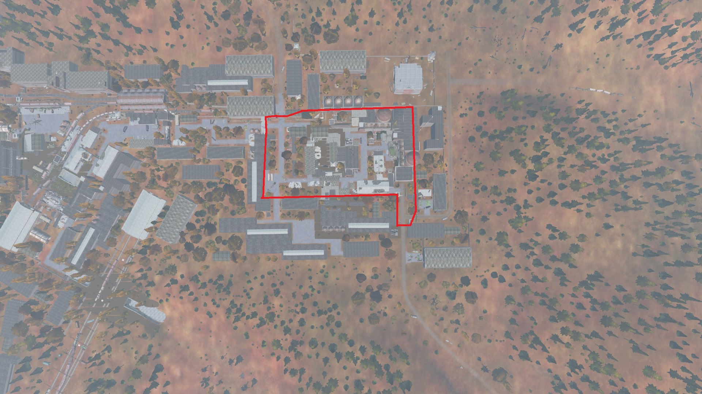
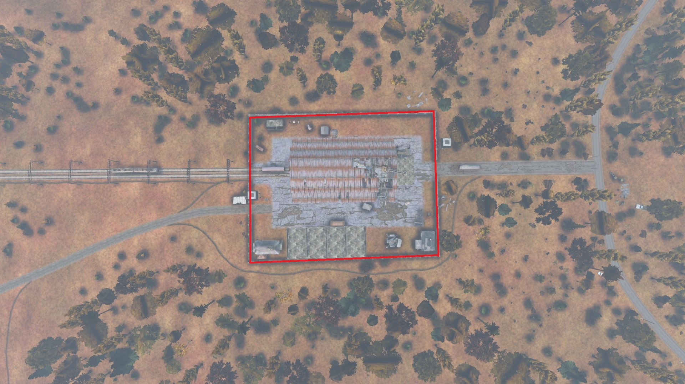
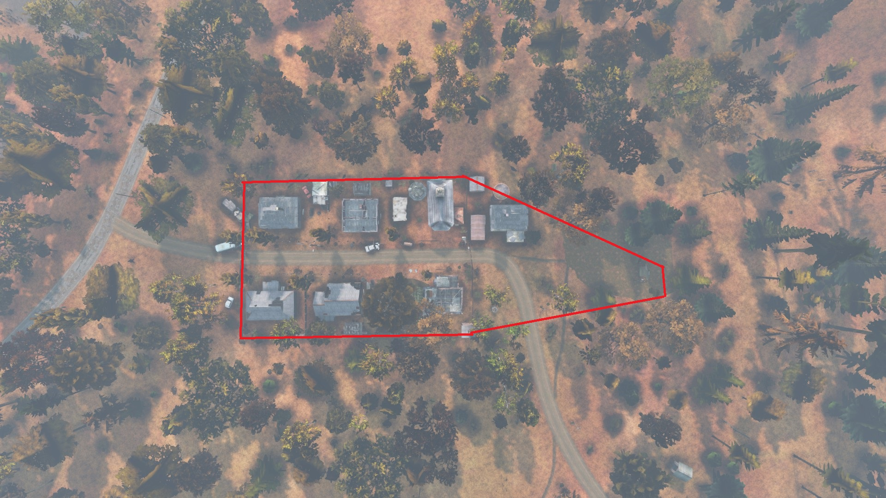
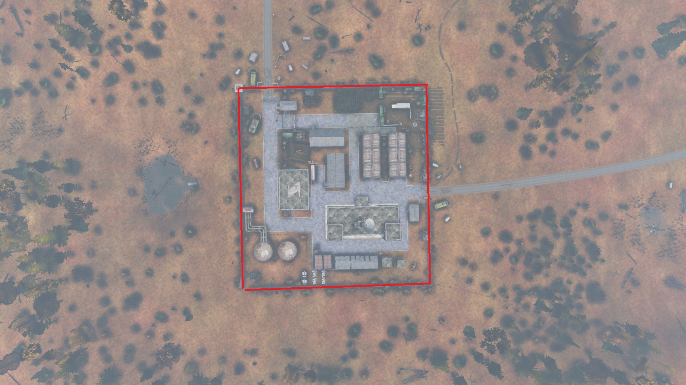
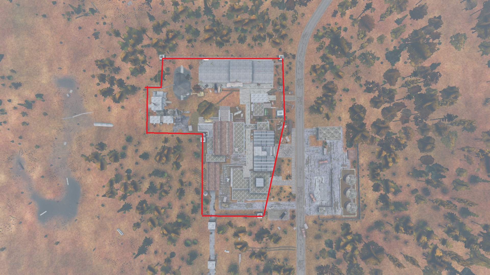
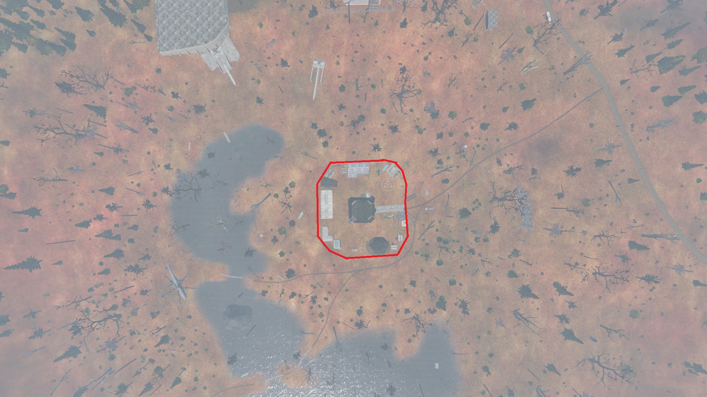
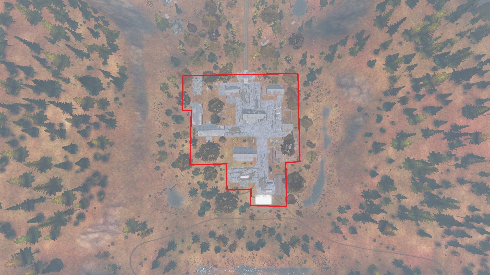
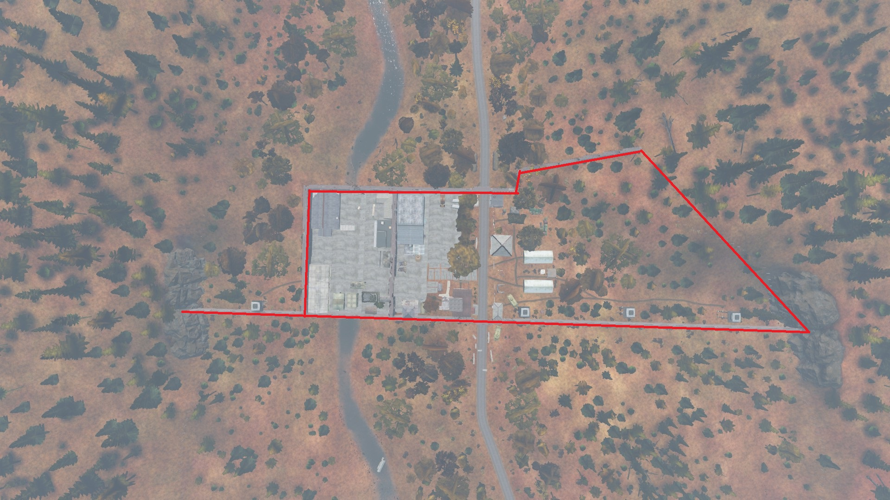
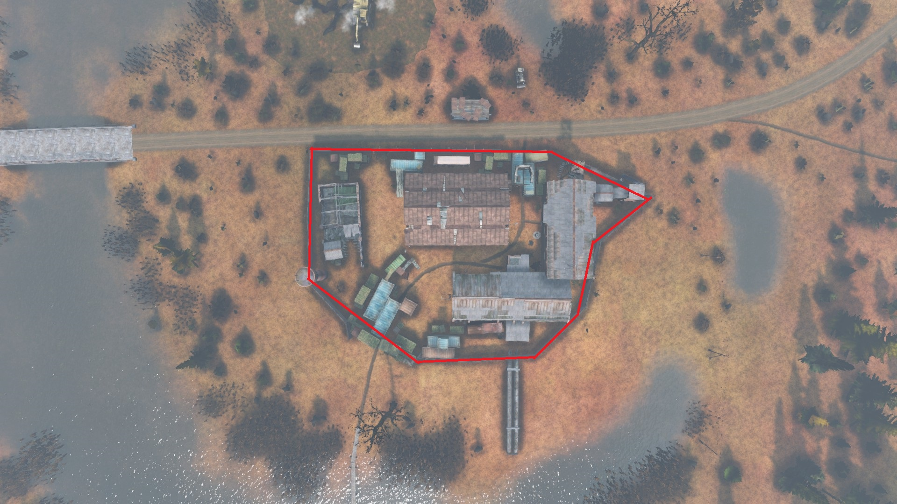

1. Общие термины
Основные термины, правила поведения и определения проекта ODYSSEYA STALKER RP.
- 1.1. Фильтра дающие сильное преимущество в бою запрещены категорически. К таким относятся: удаление травы, чрезмерное улучшение ночного зрения и подобные модификации.
- 1.1.1. РП (RolePlay) — ролевая игра персонажа в рамках лора проекта, логики мира и правил сервера.
- 1.2. Non-RP — поведение, не соответствующее RP-ситуации. Сюда относятся нереалистичные действия, игровые термины и поступки, противоречащие логике вашего персонажа или группировки.
Нарушениями Non-RP считаются:
- 1.2.1. Многократное нажатие Q/E или A/D в процессе RP.
- 1.2.2. Хождение с наклоном (Q+A / E+D и подобное), что приравнивается к использованию скриптов.
- 1.2.3. Использование фраз: «Обратись к богам», «Спроси высшие силы» и подобных.
- 1.2.4. Женский персонаж с мужским голосом и наоборот.
-
1.2.5.
Сильно заметный клиппинг экипировки.
Примечание: если плечи куртки слегка проходят через плащ — это допустимо. Носить капюшон вместе с каской — запрещено, если баллистическая защита не стакается. -
1.2.6.
Использование саундпада во время RP процесса,
кроме случаев, когда это улучшает атмосферу и логику ситуации.
Пример: сирена у ОКСОП на автомобиле.
Leave RP — выход из RP-ситуации без уведомления игроков или одобрения администрации.
Нарушениями Leave RP считаются:
- 1.3.1. Уход от RP ситуации через суицид в состоянии агонии.
- 1.3.2. Выход из игры без уважительной причины и без уведомления участников RP.
- 1.3.3. Попытка уйти от RP через релог или намеренный обрыв соединения.
Исключения:
- 1.3.4. Если вы покинули RP-ситуацию по техническим причинам, вы обязаны уведомить администрацию сервера в Discord канале «вылет».
- 1.3.4.1. При первой возможности вы обязаны вернуться в игру и продолжить RP ситуацию.
- 1.3.5. Если произошла экстренная ситуация без возможности вернуться в течение двух часов — сообщите куратору, лидеру или заместителю вашей группировки.
- 1.3.5.1. Если ситуация необратима — игроки могут договориться о времени продолжения RP ситуации.
- 1.3.5.2. Игрок может запросить телепортацию в КПЗ, если вылет нарушил логику пленения.
- 1.3.5.3. При абузе данного правила курация проекта имеет право выдать наказание игроку или штраф группировке.
- 1.3.6. Если игрок покинул RP ситуацию, группировка может запросить его телепортацию в КПЗ, если уже добралась до базы.
- 1.3.6.1. Телепортация осуществляется только с одобрения курации.
Meta Gaming — использование информации, полученной вне RP процесса.
Нарушениями Meta Gaming считаются:
- Использование OOC информации, стримов, Discord сообщений, скриншотов и других внешних источников.
- Мета-неприязнь и мета-союзы между игроками и группировками.
- 1.4.1. Запрещено переносить неприязнь из реальной жизни в игру.
1.5. ПГ (Power Gaming) — Преувеличение возможностей Вашего игрового персонажа, а также отсутствие страха за жизнь у Вашего персонажа.
Нарушениями Power Gaming считаются:
- Нападение на группу людей, превосходящих вас числом;
- Отсутствие страха за свою жизнь во время пленения, во время нахождения в КПЗ и во время сдачи в плен;
- Когда вы очнулись после ранения и окружены, а также пытаетесь проявлять агрессию;
Пояснение к правилу PG:
- правило ПГ имеет лазейку а то есть если вы в 2 человека напали на группу из пяти человек и вы выиграли файт то ПГ не будет засчитано
- Пример 1: Вас 4 человека, а вражеской группы 8 - если вы победили, PG вам засчитано не будет, если вы проиграли вам будет выдано наказание.
- Пример 2: Вы напали на группу людей, знали и видели, что их больше чем вас в 2 раза + 1 человек, вам будет выдано наказание.
- 1.5.2. Правило PG не распространяется на членов фанатичных группировок.
- 1.5.3. Для Наемников правило PG ослаблено — один член группировки приравнивается к двум бойцам обычной группировки.
- 1.5.4. Если игрок нарушает правило PG, разрешается разово нанести из огнестрельного оружия урон по конечностям (руки/ноги). Если игрок продолжает нарушить правило - вы можете отправить его в тяжелое ранение. В случае отправки в тяжелое ранение у вас обязательно должен быть откат с нарушениями. В противном случае, при отсутствии отката (записи экрана с нарушениями) вам будет засчитан RDM.
1.6. Абуз (Abuse) — использование игровых багов, механик или правил, или их недоработок, в личной выгоде (например, баг прыжка, дюпы, закрытие дверей через текстуры).
Нарушениями Abuse считаются:
- Абуз правил сервера в любой форме.
- Абуз игровых механик в силу технических недоработок движка игры
- Намеренный переезд мутантов или игроков на машине
- Использование техники и подсадки с целью залезть в незапланированную точку карты или в другие запрещенные места, такие как ЗЗ группировок (при рейде, штурме и т.д), к закрытому трейдеру и локерам группировок
1.7. РДМ (Random Death Match) — Массовое, рандомное убийство или нанесение урона игрокам без какого-либо основания и RP причины (Может наказываться вплоть до перманентной блокировки).
- 1.7.1. Если Вы обнаружили группу, но в её составе есть члены враждебной к Вам Группировки, то вся группа будет считаться для вас враждебной. Убийство сталкеров в этой группе не будет являться РДМом
1.8. РПК (RolePlay Kill — полное убийство игрового персонажа в рамках отыгрыша, с мотивацией и логикой. Убитый теряет все знания, умения, отношения и тд. Для РПК во всех случаях требуется одобрение от курации.
- 1.8. Для RPK требуется обязательное одобрение курации.
За RPK считаются:
- Казнь
- Смерть в плену
- Вывоз на Большую Землю
- Самоубийство
- Получение смертельной дозы радиации в рамках рп
- Просьбы по типу «Убей меня»
- Смерть от владельцев Зеленой Зоны
- Убийство при дезертирстве
- Заказное убийство
1.9. NLR (New Life Rule) — правило “новой жизни” или по другому “тяжелое ранение”. В случае если Вы погибли, Вы начинаете "новую жизнь", забывая все события, что произошли перед смертью до момента выхода с ЗЗ.
- 1.9.1. Первые 15 минут вы не имеете право покидать ЗЗ, на которой вы возродились.
- 1.9.2. Вы можете вернуться в бой после отыгровки тяжелого ранения (КД - 15 минут)
- 1.9.2.1. Если же вы не можете получить информацию о вашем месте смерти РП путем - вы не имеете право возвращаться назад.
- 1.9.2.2. Если же весь ваш отряд умер при битве с другим отрядом - вам запрещается возвращаться к этому месту в течение 30 минут без учета пункта 1.9.1 . (45 минут)
- 1.9.3. Для членов фанатичной группировки, при смерти всего отряда на определенной локации - данная локация закрывается на 45 минут без учета пункта 1.9.1 (60 минут)
2. Общие правила проекта
- 2.1. Правила являются частью игрового процесса и обязательны к прочтению для всех игроков.
- 2.1.1. Незнание правил не освобождает от ответственности.
- 2.1.2. При нарушении правил в нетрезвом состоянии, вы несете ответственность в удвоенном размере.
- 2.1.3. Нарушение правил как ответ на нарушение правил также является наказуемым.
- 2.2. Запрещена пропаганда и реклама сторонних проектов и их ресурсов.
Запрещено обсуждение следующих тем:
- Политика
- Пропаганда наркотиков и алкоголя
- Фашизм, нацизм, национализм, экстремизм
- Педофилия,лгбт и все что связно с ними
- 2.3.1. Запрещены провокации, направленные на разжигание межнациональной розни и оскорбление религии.
- 2.4. Запрещены любые действия, направленные на получение реальных денег за внутриигровой процесс.
К подобным действиям относятся:
- Продажа автомобилей
- Продажа оружия и снаряжения
- Оказание услуг за реальные деньги
- Иные способы монетизации игрового процесса
- 2.5. Запрещено использование багов сервера, текстур и механик игры, а также распространение информации о них.
- Нарушение данного пункта может наказываться вплоть до перманентной блокировки.
- 2.6. Запрещено использование: читов, стороннего ПО, макросов, изменения файлов игры и любых способов получения преимущества.
- Использование игровых прицелов разрешено.
- 2.6.1. Администрация имеет право вызвать игрока на проверку при подозрении в нарушении правил.
- 2.6.2. Во время проверки игрок обязан выполнять все требования администратора.
- 2.6.3. Отказ от проверки или сопротивление администрации может привести к перманентной блокировке.
- 2.7. Запрещены: сбив анимаций, скип анимаций, дропшоты и другие способы абуза механик.
- 2.7.1. Подобные действия приравниваются к Abuse.
- 2.8. Запрещено использование более одного аккаунта на проекте.
- 2.9. Жалоба на нарушение должна быть подана в течение двух суток после проблемной ситуации.
- Жалобы, поданные позже указанного срока, рассмотрению не подлежат.
- 2.10. Если во время PVP ситуации произошел рестарт сервера, игрок обязан находиться на месте в течение 10 минут после входа.
- 2.11. Администрация не обязана предоставлять игрокам техническую или конфиденциальную информацию.
- 2.12. Администрация имеет право выдать наказание за неадекватное поведение во время разбора ситуации.
- Подобные нарушения могут наказываться вплоть до перманентной блокировки.
- 2.13. Каждый участник проекта обязан соблюдать лор сервера и нормы вселенной STALKER, утвержденные администрацией.
- 2.13.1. Все нарушения, связанные с этим пунктом, могут быть рассмотрены как серьезный или многократный случай Нон-рп (см. 1.1.2)
- 2.14. Запрещён залаз на крышу любого здания, который не предусмотрен картой и требует подсадок.
- 2.14.1. Такое поведение будет рассмотрено как Абуз (см. 1.1.6)
- 2.17. Каждый игрок носящий набор одежды, который принадлежит другой группировке - делает это на свой страх и риск.
- 2.17.1. При ношении такого элемента одежды, вас может убить группировка, с которой у той объявлена война, без негативных последствий для них.
- 2.17.2. Также группировка, чью форму вы носите, имеет право относиться к вам враждебно, начиная от вопросов на месте или отвода в КПЗ, вплоть до нанесения Тяжелого ранения.
- 2.19. Вы можете стоять AFK на свой страх и риск, жалобы с восстановлением вещей из-за смерти в AFK не рассматриваются.
- 2.19.1. Если вам нужно отойти, вы можете выйти с сервера и подключиться заново, когда сможете продолжить игру.
- 2.19.2. Если вы хотите в срочном порядке отойти и вернуться за компьютер через непродолжительное время, вы можете использовать анимацию Facepalm, чтобы дать понять другим игрокам, что вы AFK. Это действие не защищает вас от возможных последствий.
- 2.20. Запрещено наносить увечья несовместимые с жизнью персонажа или препятствующие его нормальному образу жизни.
- 2.20.1. К примеру, отрезать все пальцы (так как человек не сможет стрелять), отрезать ногу, вырезать оба глаза.
- 2.20.2. Вырезать один глаз, язык - разрешено, но только по согласию жертвы.
- 2.20.2.1. В случае с Глазом - игрок отыгрывает потерю глаза и ему выдается повязка.
- 2.20.2.2. В случае с Языком - игрок обязан быть немым до РПК.
- 2.21. Запрещено кормить и поить персонажей без их согласия и со спины на территории зеленых зон.
- 2.21.1. Вне территории поить и кормить без согласия можно, но только не со спины, при этом тот, кого кормят и поят насильно, должен быть связан, или его должен кто-то держать.
- 2.22. Свод РП к ПВП. При поднятии руки (Анимация F1) и сдачи в плен в голосовом чате, ВЫ НЕ МОЖЕТЕ начать ПВП ситуацию, а ОБЯЗАНЫ доиграть её по правилам РП. Нарушение этого правила будет строго наказываться.
- 2.23. Запрещено крафтить и носить любую одежду из тряпок.
- 2.23.1. Исключением являются ботинки, если вы каким-либо образом потеряли свою обувь.
- 2.23.1.1. Когда вы доходите до ближайшей ЗЗ, вы обязаны купить себе нормальные ботинки.
- 2.24. Запрещено крафтить из тряпок и палок шину, это можно делать только в исключительном случае, для сохранения своей жизни.
- 2.25. Запрещены любые насильственные сексуальные действия без согласия второй стороны.
- 2.26. Оскорбление, упоминание родственников разрешено, но делается на ваш страх и риск. В случае оскорбления, пострадавшая сторона имеет право вас убить (не нарушая ПГ).
- 2.28. Угроза вашей жизни, является причиной для убийства агрессора.
- 2.28.1. Например: вам угрожают в нейтральной зеленой зоне расправой, это является причиной для убийства того, кто угрожает (ЗЗ группировок охраняются большим количеством мета-бойцов. Попытка убийства владельца ЗЗ на территории его ЗЗ будет расцениваться как ПГ)
- 2.28.2. На вас наставили оружие, сделали предупредительный выстрел, или же приказывают под угрозой оружия - также считается угрозой жизни
- 2.28.3. Все предыдущие правила не освобождают вас от соблюдения правил ПГ (см 6)
- 2.29. Разрешено стрелять без предупреждения по членам воюющей с вами группировками.
- 2.29.1. Вы должны убедиться в принадлежности человека к такой группировке (шеврон или форма группировки), желательно при этом вести видеосъемку (откат).
- 2.29.2. Вольные сталкеры, передвигающиеся в составе той или иной группировки - считаются за членов этой группировки.
- 2.29.2.1. Если персонаж является пленником - специально стрелять по нему запрещается.
- 2.30. Категорически запрещено использование закрытых Трейдеров группировок.
- Примечание: За взаимодействие с Трейдером, который закрыт дверью на базах ГП, будет выдано наказание в виде RPK.
- 2.31. Запрещен телепорт на метасклад другой группировки.
3. Правила игрового ника
На сервере присутствуют несколько правил относительно вашего внутриигрового ника.
- 3.1. Во время игры на проекте у Вас должно быть поставлено ваше имя персонажа в Параметрах DayZ Лаунчера. Никнейм должен быть написан латиницей и соответствовать нику в дискорде.
- 3.1.1. Запрещена смена игрового ника в лаунчере или дискорде без смены персонажа с его последующим обнулением.
- 3.2. Ник в игре и в дискорде должны совпадать, но в дискорде он может быть написаны кириллицей.
- 3.3. Запрещено использовать позывные, ники содержащие нецензурные выражения (18+).
- 3.4. Если вы являетесь членами какой либо группировки, вы должны добавить нужную приписку за место звездочек [**]НИК:
- DG - Долг
- SOP – ОКСОП
- BR - Братва
- REN - Ренегаты
- CS – Чистое небо
- NAUK – Учёные
- OBU – Охрана бункера
- MON - Монолит
- NTRL – Нейтралы
- SV – Свобода
4. Правила медиаконтента
- 4.1. Данные правила попадают под пункт правил Meta Gaming (см 1.4).
- 4.2. Трансляция/любая видеозапись - это метаинформация. Вы имеете право ее знать, но не имеете права разглашать ее, использовать, навязывать другим игрокам.
- 4.3. Стримеру запрещено использование меты из сообщений в чате, сообщений-доната и комментариев.
- 4.4. Стримерам запрещено говорить в рп открытым текстом, что они ведут трансляцию.
5. Правила РП-смерти/казни/отправки на БЗ
Все правила ниже, это - уточнения для пункта 1.8
- 5.1. Для всеобщего удобства и РП процесса, при РПК вашего персонажа, вам будет выдан бан на 1 сутки для обнуления.
- 5.2. РП-казнь, производящаяся без присутствия РП-куратора, должна быть зафиксирована на видеозапись.
- 5.2.1. В случае уведомления куратора об уже совершенной казни и отсутствии видео-подтверждения казни, он имеет основания отказать в ней и откатить казненного вместе с ситуацией, а казнителям выдать RDM.
- 5.3. В случае РП-смерти игрок обязуется изменить личность и позывной. Он не может обращаться к информации, добытой в жизни до RP-смерти.
- 5.3.1. При получении RP-смерти, вам дается время придумать новую историю, а также имя и прозвище персонажу (24 часа) (через правило 5.1).
- 5.4. Для RP-смерти должна быть весомая причина. А также согласование с Администрацией.
- 5.4.1. Война сама по себе не является причиной для RPK.
- 5.5. При мета-наборе в группировку или мета-выходе из группировки, человек забывает все, что случилось с ним ранее, он является абсолютно новым персонажем.
- 5.5.1. Исключениями являются: Дезертирство или RP выход из группировки.
- 5.6. При отказе от выполнения приказов под угрозой жизни и (или) при связанных руках, агрессор может казнить вашего персонажа.
- 5.6.1. Если Игрок-Жертва не хочет проявлять содействие в конвоировании, под присмотром курации, вы можете оглушить его. И при удачном возвращении на ЗЗ Жертва будет телепортирована к вам в КПЗ.
- 5.6.2. Исключением к этому правилу являются члены фанатичной группировки.
Весомые причины для совершения РПК
- Отказ платить выкуп или идти на переговоры.
- Серьезное оскорбление группировки и ее лидера, сделанное в рамках RP (Требуются видео-доказательство)
- Контракт на убийство.
- Убийство дезертира.
События, при которых случается РП-смерть:
- При совершении обычного самоубийства или с целью получения выгоды: обнуление ранений или физических потребностей, быстрое перемещение по карте. (Исключением считается, когда вам нужно сменить внешность.)
- Смерть во время дезертирства.
- При неудачной попытке побега из плена, смерть может привести к RPK персонажа.
- Дача согласия игрока на РП-казнь. Сказать фразу “Убей меня”.
- 5.8.1. При смерти от бага - РПК не засчитывается, если имеется видео доказательство.
Весомые причины для отправки на БЗ военными:
- Доказанный случай грабежа, каннибализма, разделывания трупа.(Данную информацию необходимо подтвердить видеофиксацией)
- Доказанное сотрудничество с банд-формированиями (необходимы фото и видеоматериалы).
- Укрытие лиц, которые обвиняются в вышеперечисленных деяниях.
- 5.10. Одновременно запрещено казнить 50% (и более) группировки.
- 5.11. Прямое нарушение договора между группировками (без предупреждения или переговоров) МОЖЕТ считаться поводом для РПК лидера или заместителя лидера группировки, нарушившей договор.
- 5.12. Таймаут на вступление в другую группировку - 3 дня, на вступление в ту же группировку - 5 дней. Таймаут также работает на становление повязкой группировок.
- 5.12.1. Данное правило так же распространяется на сталкерские объединения.
6. Правила дезертирства
- 6.1. Персонаж может дезертировать из группировки, если на то есть веская причина и с момента вступления в группировку прошло более 2-х дней.
- 6.2. Дезертировать разрешается только под наблюдением Куратора, игрок обязан уведомить любого куратора об этом. Дезертировать можно только при наличии на базе трех членов группировки (не включая Вас).
6.2.1 Дезертир в праве взять с собой:
- Набор брони;
- 1 автоматическое оружие;
- 1 дробовик;
- 1 пистолет;
- 1 нож;
- 4+1 магазинов для автоматики;
- 200 патронов для автоматического вооружения;
- 350 патронов для дробовика;
- 3 шт. бинтов;
- 2 шт. физраствора;
- 3 банки еды;
- 1 бутылку/флягу;
- 25 тысяч рублей наличными.
- 6.3. Дезертир обязан ходить в форме группировки, из которой он дезертировал, в течение 7 дней.
- 6.4. После дезертирства игрок должен скрываться от своей группировки на протяжении 7 дней.
- 6.4.1. После побега дезертир со следующего дня должен отыгрывать каждый день по 3 часа, любая смерть во время дезертирства является РП-смертью.
- 6.4.1.1 Смерть от бага с доказательством - не является РП смертью
- 6.4.1.2 Запрещено во время дезертирства намерено находиться/укрываться в чужом КПЗ
- 6.4.1.3 Также дезертиру запрещено стоять в АФК на чужой ЗЗ
- 6.4.2. При поимке и идентификации дезертира группировкой из которой он дезертировал- группировка имеет право провести РПК дезертира.
- 6.4.3. В случае выживания дезертира на протяжении 7 дней, дезертирство считается удачным и игрок имеет право вступить в любую другую ГП, не меняя при этом игровой никнейм персонажа, но имеет возможность представляться другим именем.
- 6.5. При удачном дезертирстве Вы обязаны отписать куратору этой группировки.
- 6.5.1 Удачным дезертирством считается, если вас не убили в течении 7 дней, после дезертирства.
- 6.6. При покидании группировки РП-путём с разрешения Лидера ГП правила дезертирства не распространяется.
- 6.7. У дезертирства нет срока давности, и если группировка, из которой дезертировал персонаж, узнает рп-путем что это именно он, то она имеет право его казнить.
- 6.8. Если РП действия, привели к тому, что член группировки вынужден покинуть её по тем или иным причинам, то он может это сделать сразу, и вступить в другую группировку.
7. Правила РП-рации
Во время игры на сервере и в составе группы для использования дискорда (рации) как средства связи - вы должны соблюдать следующие правила:
- 7.1 У вашего персонажа должна присутствовать рация с батарейкой в инвентаре
- 7.1.1. Запрещено не дублирование слов в игру, которые относятся к любой РП информации или действиям в присутствии третьих лиц.
Для группировок
- 7.2.1. Вы должны сидеть в голосовом РП канале своей группировки или создать закрытую чистоту на общем сервере.
- 7.2.2. Если в радиусе 100 метров потенциально есть другой игрок - вы обязаны дублировать все переговоры из Рации в чат игры (вы можете делать это на минимальной громкости голоса)
- 7.2.3. Вы можете настроить кнопку общения в канале рации так, чтобы она была идентична той, на которую вы общаетесь в игре.
Для сталкеров
- 7.3.1 Игроки обязаны создать закрытую чистоту на главном канале сервера
- 7.3.2 Если в радиусе 100 метров потенциально есть другой игрок - вы обязаны дублировать все переговоры из Рации в чат игры (вы можете делать это на минимальной громкости голоса.)
- 7.4. Голосовые каналы группировок (кроме канала БАЗА) являются РП каналами, чтобы говорить в этом канале, у вас должна быть рация с батарейкой, любое NonRP общение в этих каналах запрещено.
- 7.4.1. Голосовой канал БАЗА также превращается в РП канал (но не требует наличия рации), если у вас на базе есть кто-либо еще, кроме членов вашей группировки.
- 7.4.1.1 При покидании своей базы более чем на 50 метров, вы ОБЯЗАНЫ, перейти из канала “База” в канал РП раций. И продолжить общение по правилам пунктов 7.2.*.
- 7.5. Каждый член группировки во время игры на сервере должен находиться в соответствующем голосовом канале в дискордах нашего сервера.
- 7.6. Если вас пленили и забрали рацию, и вы находитесь в канале РП раций, вы должны отключить микрофон и динамики в дискорде, в противном случае вам и вашей ГП будет выдано наказание Meta (см. 1.4).
- 7.7. Если при пленении у вас не забрали средства связи описанные выше, то вы можете общаться по РП рации, но с обязательным дублированием в игру.
- 7.7.1. Если вы будете общаться по РП рации без дублирования в игру, вся информация, которую вы передали, будет являться Метой
8. Правила Зеленых зон
Зеленые Зоны - это Базы Группировок или Нейтральные территории, находящиеся под защитой Мета-Бойцов.
- 8.1 На каждой ЗЗ (как на базах группировок, так и на нейтральных) находится 100 мета-бойцов.
- Находясь на территории ЗЗ группировки , вы обязаны подчиняться правилам владельца ЗЗ.
В Список Зеленых Зон входят:
- Предбанник (Спаун)
- КПП ОКСОП (База ОКСОП)
- Деревня Новичков (База Старост)
- Депо (База Бандитов)
- Мехдвор на Болотах (База Ренегатов)
- Военная база на Агропроме (База Долга)
- Старая фабрика в Темной Лощине (База Свободы)
- Бар 100 рентген
- АТП (Нейтралы)
- а также базы Скрытых и Фанатичных группировок
- 8.3 Каждый игрок своими действиями может “открыть ЗЗ”, открывая возможность для ведения боевых действий на территории ЗЗ.
- 8.4 Открытие ЗЗ - Отключение мета бойцов на период открытия красной зоны , действует в течение 10 минут после последнего попадания по игроку или убийства любого игрока.
- Примечание: Если вы зашли на ЗЗ, когда 100 мета-бойцов были активны, то никакие действия вадельцев ЗЗ по отношению к вам не открывают ЗЗ.
- 8.5 После открытия ЗЗ ко всем, кто находится на её территории, применяются правила Красной Зоны
- 8.5.1. До открытия Красной зоны на территории ЗЗ , лица, не имеющие отношения к конфликту, могут покинуть ее территорию, подняв руку. Убийство данных лиц может быть засчитано как RDM.
- 8.6 Если владельцы ЗЗ открыли по вам огонь из ЗЗ или Анти-кемп зоны своей базы, когда вы вне их ЗЗ/анти-кемпа, то ЗЗ считается открытой.
- 8.7 Если лица, не являющиеся владельцами ЗЗ, открыли по вам огонь из ЗЗ или её анти-кемпа, то вы имеете право открыть ответный огонь. (При этом ЗЗ не считается открытой моментально).
- 8.7.1. Если агрессоры прячутся в ЗЗ или у вас нет возможности их нейтрализовать, то необходимо дать 5 минут (начиная с момента первого выстрела) владельцам ЗЗ, для того, чтобы выгнать агрессоров с территории своей ЗЗ, если по истечению 5 минут агрессоры не покинули территорию ЗЗ, на 10 минут ЗЗ считается открытой и на её территории начинают применяться правила Красной Зоны (в том числе и для владельцев ЗЗ).
- 8.7.2. Сторона, пострадавшая от огня из ЗЗ, обязана ждать вне анти-кемп зоны 7 минут (5 минут исходя из пункта 8.7.1 + 2 дополнительные минуты), чтобы дать время владельцам ЗЗ выгнать нарушителей с их территории, а в случае неудачной попытки избавиться от нарушителей, дать дополнительное время владельцам ЗЗ на выполнение пункта правил 8.8. (Стрельба по владельцам ЗЗ до истечения этих 7 минут будет наказываться как РДМ)
- 8.8. Во время открытия ЗЗ, обороняющаяся сторона (владельцы ЗЗ) обязана открыть все двери, за которыми прячутся обороняющиеся, кроме КПЗ, торговца и офицерской комнаты.
- 8.9. Если вас вызвали на кулачный бой, вы можете его провести между друг другом на территории ЗЗ, до момента, пока кто либо из вас не упадет без сознания.
- 8.10 Добивать пострадавшего запрещено.
- 8.11. Если у вас, что либо украли - вы имеете право потребовать вернуть данный предмет. (Только на нейтральной ЗЗ)
- 8.11.1. Если даже под угрозой оружия Вор не возвращает украденное, вору может быть засчитано PG (см.1.5)
- 8.11.2. Если даже после разоружения он отказывается - вы можете убить его.
- 8.11.3. При подобной ситуации вы должны иметь видеофиксацию того, как у вас воруют предмет и отказываются под угрозой оружия его вернуть, в случае отсутствия видео, вы можете получить РДМ, а также понести РП последствия своим персонажем
- 8.11.4. Убийство вора, в случае отказа, не является причиной для открытия ЗЗ
- 8.12. Запрещено выталкивать технику из Зеленой зоны.
- 8.13. На любых нейтральных ЗЗ разрешены любые словесные перепалки. (Исключения: оскорбление религии, вероисповедания, оскорбление нации, оскорбление родных и близких)
- 8.14. Являясь владельцем ЗЗ группировки, если вы видите человека, смотрящего в прицел винтовки или бинокль на территорию ЗЗ или Анти-кемпа - вы можете открыть огонь. (Не действует для нейтральных ЗЗ)
- 8.15. Если вы открыли огонь из Анти-кемп Зоны, она снимается, до окончания этого боевого конфликта.
Ниже представлены скриншоты с границами всех Зеленых зон
Бар 100 Рентген

Депо

Деревня Новичков

База Долга

База Свободы

Мобильный бункер ученых

База Нейтралов

КПП ОКСОП

База Ренегатов

9. Анти Кемп зона
Территория, запрещающая "сидеть в засаде" на расстоянии 100 м возле границы ЗЗ или точки телепорта, с целью убийства или грабежа, без шансов на ответ.
10. Правила Красных зон (КЗ)
Красная зона (КЗ) - это участок местности на котором происходит вооруженное столкновение двух или более сторон.
- 10.1. Любой сторонний человек, попавший в зону боевых действий, по любой причине, может быть воспринят как потенциальный противник и быть убитым.
- 10.1.1. в данном случае убийство не будет рассматриваться как РДМ.
- 10.1.2. Если боевые действия начались непосредственно вокруг постороннего человека (члена не участвующей в конфликте группировки или одиночного сталкера), ему необходимо:
- поднять руку
- лечь на более-менее видимом участке местности, дожидаясь окончания боевых действий, либо следовать указаниям вооруженных участников боевых действий.
- 10.1.3. Запрещено вести огонь по людям, которые сдаются.
- 10.1.4. Убийство человека, который не участвует в конфликте и сдался,выполнив описанные выше действия, будет наказываться как РДМ.
Объявление красной зоны:
- 10.2.1. При штурме/рейде баз группировок должно быть объявлено в глобальную сеть КПК в игре, а также в Discord канал "объявления-кпк"
- 10.2.2. на место столкновения накладывается красная зона в радиусе 200 метров.
- 10.2.3. Дополнительно красной зоной может быть объявлена любая территория, по решению администрации. Об этом обязательно уведомляются игроки через основной Discord сервер в канале “объявления”
11. Правила предупредительного выстрела
Предупредительным выстрелом считается:
- Одиночный выстрел или очередь из оружия, произведенный из оружия без глушителя с дистанции не более 100 метров и с обязательным объявлением требований голосом на 3 палки;
- Выстрел, произведенный из пистолетов, за предупредительный не считается.
- Очередь из оружия считается как 2-6 патронов.
- 11.1. Предупредительный выстрел считается актом агрессии . Предупредительным выстрелом считается одиночный выстрел или очередь из оружия, произведенный в сторону Игрока (рядом с игроком), с целью обратить его внимание на себя и продемонстрировать свои намерения.
Примечание: Игрок, в сторону которого был дан предупредительный выстрел, сам решает как на него реагировать. Сам факт предупредительного выстрела не означает то , что на него нужно отвечать агрессией. Вы можете ответить агрессией на свой страх и риск.
- 11.2. Если при первом предупредительном выстреле или очереди цель не поняла, что это было адресовано ей, необходимо дать повторный предупредительный выстрел или очередь и продублировать свои требования в соответствии с правилами. Интервал между предупредительными выстрелами или очередью должен быть не менее 3-х секунд, чтобы Игрок успел понять, что происходит и убрать оружие. Если после этого человек не остановится и не поднимет руку(-ки)/не уберет оружие за спину, разрешено открыть огонь на поражение.
- 11.2.1. Выстрел в человека за предупредительный выстрел не считается.
Примечание: Предупредительный выстрел по игроку будет наказываться по пункту РДМ.
- 11.3. Предупредительный выстрел является достаточной причиной для ответной стрельбы на поражение. Разрешено стрелять без предупреждения по членам вражеской группировки (с которой официально объявлена война), однако Игрок должен убедиться в принадлежности человека к такой группировке (шеврон или форма группировки), желательно при этом вести откат.
- 11.4. Неисполнение требование сдаться/сложить оружие, может является причиной для начала перестрелки. В такой ситуации инициаторами перестрелки могут быть обе стороны.
- 11.4.1. Также предупредительный выстрел дается, максимум в 100 метрах от жертвы
Примечание: Допустимой погрешностью является 20 метров.
- 11.5. Предупредительный выстрел является угрозой для жизни. Перед тем как сделать предупредительный выстрел подумайте о том, что можете оказаться под ответным огнем.
- 11.6. Если в ответ на предупредительный выстрел игрок не проявляет агрессивных действий (не открывает огонь , не пытается сбежать) то игроки, которые дали предупредительный выстрел, обязаны отыграть ситуацию по РП.
- 11.6.1 Предупредительный выстрел могут делать исключительно группировки. Исключения: Повязки группировок (официальные доверенные лица)
12. Агрессор
- 12.1 При подаче предупредительного выстрела в воздух, вы обязаны крикнуть громким голосом (на 3 палки) то , чего вы хотите от Жертвы.
- 12.2 Если Жертва не понимает, что именно ей был дан предупредительный выстрел- вы имеете право дать второй выстрел спустя 3 секунды после первого
- 12.2.1 В случае, если после второго выстрела не последовало реакции от лица, которому был дан предупредительный выстрел, разрешено открыть огонь на поражение по игроку.
- 12.3 Если игрок выполнил ваши требования после предупредительного выстрела, вы обязаны отыграть РП и не имеете право открывать по нему огонь.
Примечание: Если человек начинает вести себя дерзко или неадекватно вам разрешается сломать ему ногу и отыграв рп ситуацию, если и после этого человек не реагирует на ваши замечание\требования разрешается убить игрока
Жертва
- 12.4 Если вы услышали предупредительный выстрел (или несколько) и следующий за ним запрос - любое несоблюдения запроса, может быть расценено как агрессия.
- 12.4.1. Если в течение минуты в Вашу сторону, как Жертве, не было выдвинуто никаких требований, то Вы можете двигаться дальше, а ваше убийство или нанесение любого урона по вам будет рассчитываться как RDM.
- 12.4.2. Если запрос угрожает вашей жизни вы можете как повиноваться, так и начать стрелять в ответ. Помните о правиле PG.
Автомобиль
- 12.5 Предупредительный выстрел должен даваться рядом с авто, но не по нему.
- 12.5.1. Если стрелок нечаянно попадёт по людям, которые сидят в автомобиле, стрелку будет засчитан РДМ.
- 12.5.1.1. Исключением является только, если момент попадания по людям в автомобиле связан с технической ошибкой игры.
- 12.5.1.2. В случае спорной ситуации администрация оставляет за собой право последнего голоса;
- 12.6. Вы обязаны крикнуть громким голосом (на 3 палки) то, чего вы хотите от людей, сидящих в авто.
- 12.6.1. Рядом с авто дается 1 предупредительный выстрел. В случае, если авто не начинает торможение в течении 3 секунд, разрешается открыть огонь на поражение. Если авто начало тормозить , но вы открыли по нему огонь , это может быть расценено как РДМ по решению Администрации.
13. Правила Гоп-стопа
- 13.1. Гоп стопом считается грабеж под угрозой оружия и пленение с целью наживы.
- 13.1.1. Гопом имеют право заниматься только Бандиты и Ренегаты.
- 13.2. Гопать можно только группой от 3 человек и больше. Исключение - Бандиты на свалке, Ренегаты на Болотах.
- 13.2.1. Во время гоп стопа работают правила PG для обеих сторон.
- 13.2.2 Если 3 игрока гопает группу из 6 игроков, то в случае их смерти они получат PG
- 13.3. При гоп стопе вы должны произвести следующие действия:
- 13.3.1. Следовать правилам предупредительного выстрела
- 13.3.1.1. При проведении гоп-стопа сторона нападения ОБЯЗАНА вести откат всего процесса и хранить его не менее 4-х дней.
- 13.3.1.1.1. Если откат будет отсутствовать, администрация имеет право выдать вам наказание.
- 13.3.2. Вы можете ударить кулаком жертву, если та не подчиняется приказам, после того, как вы оповестили жертву о том, что это гоп-стоп.
- 13.4. При гоп стопе, ответственность за жизнь жертвы лежит на нападающем
- 13.4.1. Смерть жертвы в плену при Гоп-Стопе без имеющейся на то веской RP причины , будет засчитана как РДМ.
- 13.5. Бандиты и Ренегаты имеют право забирать все ваши вещи, но обязаны оставить минимальный набор для выживания
- 13.5.1. Одно оружие (Не пистолет) и патроны к нему,
- 13.5.1.1. Кол-во патронов зависит от типа оружия:
- Для дробовика 80 патрон
- ПП 3 магазина и 6 стакаов патронов к нему.
- Автомат 3 магазина и 4 стака патронов.
- 13.5.2. А также медицину и одежду:
- 3 бинта,
- Противогаз минимум с 4 фильтрами,
- Штаны,
- Куртку,
- Ботинки,
- еду и воду.
- 13.5.2.1. Вы можете забрать противогаз жертвы и отдать ей свой, если противогаз жертвы лучше, аналогично и с оружием.
- 13.5.2.2. Противогаз должен иметь параметр защиты достаточный, чтобы беспроблемно дойти до ближайшей ЗЗ.
- 13.5.3. Запрещено оставлять необходимые вещи при гоп стопе в уничтоженном состоянии.
- 13.6. Группировки вправе изымать только такие предметы как:
- Долг: Детекторы, артефакты, контейнеры для артефактов и наркотики.
- Свобода: Части мутантов, лицензии, контейнеры для мутантов.
- Военные: Оружие, наркотики, детекторы, артефакты, контейнеры для артефактов, части мутантов, документы, контейнеры для частей мутантов
- Монолит: Артефакты, контейнеры, детекторы, части мутантов, документы.
- 13.6.1. Изъятие перечисленных предметов данными группировками не является гопом.
- 13.7. Также любая группировка в праве изымать средства связи (если на это есть RP причины).
- 13.8. Запрещен гоп-стоп на Кордоне.
- 13.8.1. Кордон заканчивается на Северном КПП, Воротах ведущих на Темную Лощину, после первой вышки по левую руку на болотах).
14. Правила пленения
- 14.1. Пленить можно группой от 3 человек и более.
- 14.1.1. Пленением является остановка с целью увести человека на базу для допроса или выкупа.
- 14.2 Пленение начинается после того, когда вы сложили оружие, подняли руку(- и)
- 14.2.1. Для пленения персонажа необходимо наставить на него оружие и голосом подать команду о сдаче в плен и сложении оружия.
- 14.2.2. Пленение, без сопровождения голосом, не является пленением и может быть рассчитано как RDM.
- 14.3. При пленении, сторона пленяющих ОБЯЗАНА вести видеофиксацию (откат).
- 14.4. При выходе из бессознательного состояния, если игрок был окружен или под прицелом противника, он обязан сдаться, при смерти в такой ситуации игроку, что не сдался, будет засчитано PG (с последующим телепортом в КПЗ).
- 14.5. Любая группировка может пленить кого угодно, НО обязана иметь для этого РП причину.
- 14.5.1. До 3 встречи брать в плен запрещено.
- 14.5.1.1. Исключение: Наемники, Чистое небо, Ренегаты, Бандиты, ОКСОП, , Монолит.
- 14.6. Хозяева ЗЗ могут брать в плен сталкеров/членов группировок на их территории.
- 14.6.1. Сталкер/член группировки может ослушаться и убежать.
- 14.6.1.1. Если тот будет убит на территории ЗЗ во время побега, ему присваивается RP смерть.
- 14.7. Конвой несет полную ответственность за пленника, в том числе и за его смерть.
- 14.7.1. Если конвой допустил смерть пленника, то пленнику засчитывается тяжелое ранение и группировка теряет пленника.
- 14.8.2. Если пленный при малом количестве здоровья (меньше половины) не говорит, что ему плохо и нужно оказать мед. помощь (радиация, кровотечение и тд) то при его смерти ему будет засчитано RPK + PG.
- 14.9. При взятии в плен группировка, пленившая игрока, обязана предоставить ему еду, воду и медикаменты при необходимости
- 14.9.1. Если пленник погибнет в КПЗ по вине группировки, которая его пленила (группировка забыла дать воды, еды, медикаментов, забила до смерти), тем засчитывается NonRP и RDM.
- 14.9.1.1. Пленнику же засчитывается тяжелое ранение.
- 14.10. Пленные в КПЗ должны находиться под постоянным присмотром одного члена пленившей его группировки.
- 14.11. Нельзя пытать и держать в КПЗ человека более 24 часов реального времени.
- 14.11.1. Он должен отыгрывать RP и находиться в онлайне во время пленения максимум 4 часа. (Можно отыгрывать пленение дольше на усмотрение плененного)
- 14.11.2. Разрешается написать в личные сообщения Discord пленному/пленившему, чтобы договориться зайти на сервер и отыграть RP. (Лучше через Курацию)
- 14.12. Передача пленного между группировками не продлевает его срок пленения.
- 14.13. Если во время пленения происходит рестарт, либо краш сервера, то пленный обязан подождать 15 минут, пока зайдут пленившие, при этом вести откат данного момента.
- 14.13.1. По истечении 15 минут, если пленившая сторона не зашла в игру, плененный имеет право на побег.
- 12.13.2. В случае отсутствия отката со стороны плененного, он автоматически попадает в КПЗ пленяющих.
- 14.14. Если Вы попали в плен и Вас связали наручниками/веревками, то Вы обязаны подчиняться приказам пленяющих.
- 14.14.1. Исключением является: Монолит.
- 14.14.1.1. Фанатичные группировки не испытывают страха во время пленения, но не имеют права развязываться/снимать с себя наручники, если окружены 2 или более игроками других группировок
- 14.14.1.1.2. Они все еще обязаны передвигаться по указаниям пленившей их группировки, если их окружают 2 и более игроков.
- 14.15. Если на пленном представителе фанатичной группировки Монолит отсутствует пси-шлем, то он может передавать информацию своим членам группировки по ментальной связи.
- 14.15.1. Если на пленном представителе фанатичной группировки Монолит надет пси-шлем, то он начинает чувствовать страх за свою жизнь и помнит только то, что произошло с ним до кодировки.(До превращения в монолитовца)
- 14.15.2. Запрещено вывозить члена группировки монолит на локации, передвижение по которым запрещено их внутренними правилами.
- 14.16 Цена за выкуп пленного должна быть в пределах разумного.
- 1. Член группировки - до 250.000
- 2. Заместитель - до 500.000
- 3. Лидер - до 1.000000
- 14.16.1 После взятия человека в плен и доставки его на территорию собственной ЗЗ группировка обязана в течение часа объявить в игровой КПК, а также в дискорд канал "объявления-кпк" о том, что пленный находится у них и выдвинуть свои требования. Таковыми могут являться либо запрос выкупа по общим правилам, либо, в других исключительных случаях, причина, согласованная с курацией.
- 14.16.2 В случаях пленения по любым другим причинам, например, для проведения опытов учеными, гоп стопа, отыгрыша какой-то РП ситуации, нельзя намеренно удерживать человека. Его следует отпустить сразу же, после завершения всех требуемых действий в контексте ситуации. Намеренное удержание человека в плену в таких случаях будет наказываться на усмотрение администрации.
- 14.16.3 В случае объявления суммы выкупа за пленного, его разрешается держать в плену на территории ЗЗ двое суток реального времени.Если за это время за него не была внесена сумма выкупа, либо не объявлен штурм для вызволения пленного, данного игрока разрешено убить (отправить в тяжелое ранение), либо в исключительных случаях казнить (провести RPK), строго по согласованию с старшей курацией.
- 14.17. Переговорщик является лицом НЕПРИКОСНОВЕННЫМ.
- 14.17.1. Любая агрессия в сторону переговорщика запрещена.
- 14.17.2. О том, что человек идет в роли переговорщика, должно быть оговорено заранее через кпк или игровую рацию, при этом должен вестись откат
- 14.17.2.1 Переговорщик может быть максимум 1.
- 14.17.2.2 Переговорщиком может выступать любое лицо, назначенное лидерским составом группировки.
- 14.18 Помимо выкупа, пленного можно освободить посредством штурма, на время штурма пленник находится в заключении.
- 14.18.1 Если штурмующие побеждают, то пленник освобождается
- 14.18.2 Если же штурм проигран, то группировка имеет право казнить пленника.
15. Правила пыток/допроса пленного
- 15.1. При пытках персонаж обязан отвечать на все вопросы и рассказывать информацию которой владеет
Исключение: Наемники, Монолит.
- 15.1.1. Не стоит забывать, что степень раскрываемой информации зависит от продолжительности пыток и применяемой силы.
- 15.2. Агрессивные действия или оскорбления Пленным во время пыток могут стать причиной для последующего РПК.
- 15.3. Пленного нельзя заставлять писать в кпк.
- 15.3.1. Только если пленный сам на это согласился
- 15.4. Группировка, занимающаяся пыткой обязана вести видеофиксацию для возможного разбора ситуаций.
- 15.4.1. В случае отсутствия видеофиксации ситуация будет рассматриваться в сторону пострадавшего лица.
- 15.4.2. Видео необходимо хранить 7 дней.
- 15.5. Запрещено наносить увечья, несовместимые с жизнью, или психологические травмы
- 15.5.1. Например кормить пленного человеческим мясом, отрезать конечности и т.д.
- 15.5.2. При пытках запрещено использовать кувалду и огнестрельное оружие. Нарушение карается NonRP.
- 15.6 Если пленному выдали рацию, то он обязан зайти в канал рации своей гп и дублировать весь диалог в игру.
16. Правила группировок
- 16.1. Если вы покинули группировку, или вас казнили, то вступить в другую группировку вы можете только через 3 дня.
- 16.1.1 Вернуться в ту же группировку по истечении 7 дней.
- 16.2. Запрещено противоречить лору своей группировки. В случае не отыгрыша или же нарушения лора группировки в грубой форме, игрок получает наказание в виде NONRP.
- 16.3. Сталкер передвигающийся совместно с членами какой-либо группировки, приравнивается к члену данной группировки.
- 16.3.1. Исключение: передвижение с ГП в качестве пленника.
- 16.4. Группировкам запрещено продавать/передавать свою уникальную форму одежду, бронежилеты, каски и прочее
- 16.4.1. Искл. продажа наемникам.
- 16.5. Члены группировок обязаны носить одежду и снаряжение только в расцветке и с символикой своей группировки.
- 16.5.1. Исключение: Ренегаты, Наемники (свой шеврон в рюкзаке).
- 16.5.1.1. Наемники могут носить одежду и снаряжение чужих гп , сталкеров только при выполнении миссий связанных с захватом/убийством цели по заказу.
- 16.5.1.2. Ренегаты могут носить какую угодно одежду,снаряжение(исключение: одежда,снаряжение фанатичных гп),но на них всегда должны оставаться 2 элемента их экипировки. Примечание: Ботинки и перчатки одновременно не считаются.
- 16.6. Каждой из группировок разрешается иметь до 5 доверенных людей (повязки).
- 16.6.1. Повязка выдается человеку за продолжительную и неоднократную помощь группировке.
- 16.7. Группа из 2-х повязок имеет право взять в плен члена вражеской группировки и отвести его приближенной группировки
- 16.8. Если Вы видите сталкера с повязкой враждебной к Вам группировки, то Вы имеете право открыть по нему огонь на поражение без предупреждения.
- 16.8.1. Цветовую гамму повязки необходимо определить по РП, к какой относится группировке.
- 16.11. Если члены скрытой гп ходят под прикрытием(сталкерами) на них распространяются правила сталкеров (за исключением продолжительности пыток в КПЗ)
- 16.11.1. Члены секретных группировок в сталкерской форме не могут первые открывать огонь по враждебным для себя гп
- 16.12. Для рассекречивания группировки необходимо иметь следующие знания: ▪ позывные всех членов ГП и их Ранги (лидер, зам) ▪ информация о деятельности гп ▪ информация о местоположении базы
- 16.12.1. Только в совокупности всех факторов возможно рассекречивание ГП
- 16.13. Палка на группировку дается при нарушении в двух случаях: ▪ во время нарушения было от трех человек и более человек из этой группировки. ▪ в случае участия в нарушении зама/лидера, вне зависимости от кол-ва человек, в момент нарушения!
- 16.14. Для заключения союза необходима веская РП причина и встреча двух лидеров под откат с отправкой доказательства о союзе в дискорд канал ГП "Отношения-ГП"
- 16.14.1 Запрещено заключать более чем 3 союза одновременно.
- 16.15. Братва, ренегаты, ОКСОП - могут брать деньги за проходку/лицензии, цена зависит от того кто это, Член Группировки или Вольный сталкер!
- 16.15.1. Цена лицензий для группировок до 1.000000 в неделю
Примечание: Данные лицензии действуют на всю группировку, выдается полный пакет лицензий, лицензии на технику оплачиваются отдельно!
- 16.17.2. Цены и Виды лицензий:
- 1. Базовые лицензии - Нахождение в ЧЗО, Охота на мутантов, Двуствольные и помповые дробовики. – до 40к
- 2. Самозарядные дробовики. – до 50к
- 3. Автоматическое оружие. – до 100к
- 4. Снайперские винтовки – до 150к
- 5. Крупнокалиберное оружие(пулеметы). – до 200к
- 6. Лицензирование автомобилей в ЧЗО посредством номерных знаков. - до 300к
- 7. Глушители - 100к
- 16.17.3. Цена проходки для сталкера, до 100к на неделю.
- 16.17.4. Цена проходки с группировки до 1.000000 в неделю.
Примечание: Бандиты и Ренегаты, могут крышевать группировки и сталкеров за отдельную плату. ) От 300.000
- 16.17.5. Все лицензии и проходки выдаются сроком на неделю. Обязательно вносить информацию о заплативших в внутренний Дискорд группировки и отслеживать сроки выданных лицензий/проходок. Строго запрещается требовать деньги за лицензии/проходки в обход установленных правилами сроков и лимитов , такие действия будут наказываться.
Примечание: Если группировкой/сталкером была оплачена лицензия/проходка, но по какой-то причине ОКСОП/Бандиты/Ренегаты расформировались раньше окончания сроков действия лицензий/проходок, а на их место встали новые люди, то новые ОКСОП/Бандиты/Ренегаты имеют право требовать оплаты лицензий/проходок по новой, в свои установленные правилами сроки.
Важно: Каждой группировке, либо сталкеру дается минимум 3 дня на оплату лицензий/проходки.
- 16.18. Выкуп за открытые бесхозные автомобили могут запрашивать все группировки.
- 16.18.1 Цена за выкуп автомобиля до 800к..
Примечание:ОКСОП,РЕНЕГАТЫ,БАНДИТЫ, могут взламывать транспорт который найдут вне ЗЗ.
- 16.19. У группировок предусмотрена возможность сдачи комнаты в аренду другим игрокам.
- 16.19.1. В комнате будет закрытая дверь и небольшое место для хранения личных вещей.
- 1619.2. При повышении цены на аренду - вам обязаны сообщить об этом минимум за неделю до истечения вашего арендного срока.
- 16.19.3. Если у вас истек срок аренды и вы не выходите на связь с группировкой в течении 24 часов - все вещи хранящиеся внутри комнаты переходят во владение группировки арендодателя
- 16.19.4. Если вы арендуете у группировки комнату, а группировка ушла в расформ, у вас есть 24 часа, чтобы забрать свои вещи и найти себе новое место. В противном случае ваши вещи будут безвозвратно удалены.
- 16.19.5. Группировка может поселить у себя и сдать помещения на следующих условиях: - Не более 6-ти человек в целом могут являться арендаторами - Не более 3-х сданных комнат в целом Условия взаимосвязаны и не взаимоисключаемы.
- 16.19.6 Для получения одного помещения под сдачу, группировка должна заплатить за ремонт и обустройство одного помещения 1 млн. игровой валюты. Помещения оплачены группировкой до её расформирования.
- 16.20 Запрещено перепродавать, продавать, торговать, отдавать, вещи из трейдера группировки, добавленные туда за донат. Нарушение этого пункта правил повлечет за собой дальнейшее удаление проданной вещи из трейдера.
17. Правила повязок (вольные помощники)
- 17.1. Вольный сталкер, являющийся повязкой, формально является членом группировки.
- 17.2. Сталкер, получивший повязку, обязан всегда носить ее с собой. Если он надевает ее на руку, то автоматически на него распространяются правила группировки, у которой он получил повязку.
- 17.3. Снять и одеть повязку игрок может только на территории ЗЗ группировки, от которой получил повязку.
- 17.4. Член группировки выдающий повязку обязан проинформировать о враждебных группировках.
- 17.5. При получении повязки вам должны объяснить какие отношения между вашей Группировкой и другими на данный момент на сервере.
- 17.6. Дать или Снять с вас статус повязки может Заместитель или Лидер группировки.
18. Правила объявления войн
- 18.1. Для объявления войны другой группировке необходима весомая РП причина и одобрение со стороны куратора. Фанатичные ГП не могут объявлять войну другим группировкам.
- 18.1.1 Причинами для объявления войны могут быть:
- Целенаправленное уничтожение членов группировки (3 и более вооруженных стычек)
- Целенаправленное нарушение или игнорирование заранее оговоренного договора
- Стычка на ЗЗ, из пункта 10.
- Группировка отказывает в выплате денежного долга ( более 500к)
- 18.1.2. Секретные группировки в праве объявить войну другой, если о ней другая группировка собирает информацию.
- 18.1.2.1 Объявляющая сторона должна иметь доказательсто данного действия.
- 18.2. Во время войны отменяется правило пред. выстрела (см 18) и рдм (см 1.8) относительно врагов.
- 18.3.1. Если вы перепутаете случайного игрока с членом враждующей группировки, вам будет засчитан РДМ за несоблюдение пункта 18
- 18.4. Война может быть окончена путем мирного урегулирования (для переговоров обязательна видеофиксация ) либо при расформе группировки.
- 18.5. При капитуляции одной из сторон, сторона победитель в праве запросить что угодно у стороны пораженных
19. Правила рейдов/штурма
- 19.1. В чем различия Штурма и Рейда:
- 19.1.1. Рейд - нападение на базу группировки с целью наживы, при нём все двери кроме КПЗ открыты, при победе в рейде можно забрать вещи со склада группировки, а также личных домов на территории этой группировки. Рейд может быть организован только в состоянии войны с группировкой и только с разрешения курации.
- 19.1.2. Штурм - нападение на базу группировки с целью вызволения заложника или автомобиля.
- 19.1.2.1 В случае штурма все двери, кроме Склада, должны быть открыты.
- 19.2 Запрещено каким-либо образом способствовать искусственному сохранению лута перед рейдом.
- 19.2.1. Релог с вещами, продажа чего-либо торговцу перед началом Рейда, убирать вещи из помещений на улице в бункер, или вытаскивать вещи из ящиков и прятать на территории базы.
- 19.3. Для начала рейда\штурма необходимо присутствие не менее 3 человек на базе со стороны обороняющихся, а также разрешение от курации.
- 19.4. Перед проведением штурма, атакующая сторона должна собрать бойцов в непосредственной близости от цели (не более 500 м) и объявить в общий КПК чат (или мегафон) свои требования к атакуемым.
- 19.4.1. Тем, кто защищается, дается 30 или более минут на обсуждение условий.
- 19.4.2. Обороняющейся стороне запрещается покидать своё ЗЗ после объявления штурма.
- 19.4.3 рейд можно объявить если группировка простояла на сервере неделю
- 19.5. Перед объявлением рейда или штурма требуется получить разрешение от куратора и после объявить о нем в Дискор КПК не менее чем за сутки до самого рейда. При согласовании сторон и согласовании курации можно провести штурм раньше, если стороны готовы.
- 19.5.1 Сталкера или представители других гп , кто находится в близости к ЗЗ должны или занять в ней позиции или покинуть зону конфликта.
- 19.5.2 После объявления начала рейда\штурма запрещено приближаться к месту проведения рейда, а также прямо или косвенно участвовать в нём на любой из сторон.
- 19.6. В случае прямого отказа выполнять требования, молчании на указанные требования или агрессии со стороны обороняющихся, можно расценивать это как преждевременный отказ и зеленый свет к началу штурма или рейда.
- 19.7. Сторона защиты, после получения тяжелого ранения во время рейда\штурма должна покинуть сервер и дождаться окончания рейда\штурма.
- 19.7.1. Во время рейда\штурма обороняющимся запрещено респавниться на своей базе.
- 19.8. Во время штурма обороняющимся запрещено:
- убивать заложника
- любыми способами подставлять его под пули (на линию огня)
- однако, если заложник был убит атакующей стороной, то ему присваивается РПК
- 19.8.1. Заложник должен находится в КПЗ во время Штурма.
- 19.9. На базу группировки может быть совершен только один рейд раз в 10 дней.
- 19.9.1 Если же условия рейдящих были выполнены и рейд не начался, то следующее объявление рейда возможно только через 7 дней.
- 19.9.2. Это правило действует конкретно на группировку которая объявляла или участвовала в атаке, остальные же группировки могут совершать рейд.
- 19.10. Прятаться за закрытыми дверями находясь в Рейде - запрещено.
- 19.10..1. Все двери на базе обороняющихся должны быть открыты
- 19.10.1.1. Кроме КПЗ.
- 19.11. Время рейда\штурма не должно превышать 30 минут реального времени.
- 19.11.1. По истечении этого времени атакующая сторона должна покинуть базу, даже если все обороняющиеся уже убиты.
- 19.12. Пользоваться торговцем и банком во время рейда запрещено.
- 19.13. Время на сбор трофеев после победы в рейде, вывод заложников, решение рп-ситуаций с побежденными при Штурме - 15 минут.
- 19.14.1. Куратор или Ивентолог, который присутствует при Штурме\Рейде, сообщает, когда рейд окончен и после этого засекает 15 минут.
- 19.14.2. Куратор, который одобрил рейд/штурм, обязательно должен находиться рядом и наблюдать за процессом Штурма\Рейда.
- 19.15. Во время рейда\штурма Бункера Учёных в бункере имеют право спрятаться только сами ученые, после чего дверь герметизируется и до окончания рейда может быть открыта только изнутри.
- 19.16. При рейде\штурме запрещено размещать предметы интерьера, ящики и т.п. в качестве баррикад.
- 19.16.1. Запрещено уничтожать вещи, забирать ящики и другие предметы интерьера во время рейда (штурма) и во время сбора трофеев.
- 19.17. Запрещено рейдить, штурмовать, грабить личные дома игроков, даже если хозяев нет дома.
- 19.18. Запрещено объявлять рейд с 2 часов ночи до 10 часов утра по московскому времени.
- 19.19. Запрещено привлекать на рейд/штурм группировку, с которой вы не состоите в союзе и у которой (даже в союзе) нет веской RP причины для участия в рейде/штурме.
- 19.19.1 Разрешено привлекать на рейд/штурм наёмников согласно прайсу по внутренним правилам наёмников, но не более 5 человек.
- 19.20 Нападающих во время Рейда/Штурма не может быть больше, чем в два раза, нежели обороняющихся (Пример: 7 защищаются, 14 атакуют)
20. Правила техники
- 20.1. Запрещено специально байтить своей техникой. Например, кружить на автомобиле вокруг базы любой группировки.
- 20.1.1. Это правило будет приравниваться к Кемпу Зеленой Зоны
- 20.2. Запрещено первым открывать огонь по вертолетам.
- 20.2.1. Разрешено стрелять по вертолетам, которые намеренно летают и зависают (останавливаются в воздухе) над территорией базы группировки, а также если будет осуществляться приземление на базу без уведомления.
- 20.2.1.1. Огонь могут открыть только хозяева базы группировки.
- 20.2.1.2. Не относится к территориям: Бар, Кордон.
- 20.2.2. Во время войны группировок разрешено стрелять по вертолетам враждебной группировки, которые намеренно летают и зависают (останавливаются в воздухе) над враждующей группировкой.
- 20.2.2.1. Обязательно иметь откат, подтверждающий нахождение враждебной группировки в данном вертолете.
- 20.3. Транспорт могут взламывать группировка Братва, Ренегаты и Военные.
- 20.4. Запрещено отжимать/конфисковывать/взламывать транспорт на территории зеленых зон.
- 20.5. Запрещено намеренное уничтожение или ухудшение состояния автомобиля.
- 20.6. Целенаправленный наезд транспорта на игрока приравнивается к целенаправленному РДМ.
- 20.6.1. Исключения: случайный наезд (обязательная видеофиксация).
- 20.7. Запрещено гопать на ящики/бочки с автомобилей и/или снимать ящики/бочки с угнанных транспортных средств в личное пользование.
- 20.8. Вы оставляете вещи в своей открытой технике без присмотра на свой страх и риск.
- 20.9. Вертолеты угонять запрещено.
- 20.9. Запрещено оставлять технику на территории ЗЗ, без разрешения хозяев этой самой ЗЗ.
- 20.9.1. Исключение: Деревня новичков, Бар
- 20.9.2. Если такое происходит, Хозяин ЗЗ может выставить правило выкупа автомобиля.
- 20.10. Строго Запрещается специально давить мутантов на технике. Нарушение этого правила приравнивается к Абузу (см. 1.6).
- 20.11. Если игроки закрываются в Военной технике, то в случае игнорирования приказов по типу “Выходи, а то застрелю” игрокам ПГ засчитано не будет, так как они находятся в Бронированной технике.
- 20.11.1. К таким машинам относится Тигр, Тайфун, БТР, БМП, БРДМ и тд.
- 20.12. Если вы обнаружили “брошенную” и открытую технику - вы можете пользоваться ей, пока не доведете её до ЗЗ любой из группировок.
- 20.12.1. Запрещено брать что-то из багажника авто.
- 20.13. ОКСОП,РЕНЕГАТЫ,БРАТВА - Если машина была взломана Отмычкой, Запрещено изымать что-то из багажника, машина должна быть доставлена на базу ГП в том виде, в котором она была взломана.
- 20.13.1 ОКСОП может изъять только контрабанду (наркотики,нелегал).
- 20.13.2 Категорически запрещается использовать конфискованную машину для личных целей.
- 20.14. ГП, которая конфисковала авто, по приезду на базу, обязана сообщить в соответствующий канал в Дискорд (объявления-кпк), о том, что машина находится у данной ГП, и нужно заплатить выкуп.
- 20.15. Обязательно вести видеофиксацию о взаимодействии с украденным ТС и хранить не менее 2-х дней.
- 20.16 Если вашу машину взламывают, у вас есть веская РП причина уничтожить угонщиков на месте.
- 20.17 На территории анти-кемпа разрешено взламывать любые транспортные средства (ЗЗ ЭТО НЕ КАСАЕТСЯ, ТОЛЬКО АНТИ КЕМП, см. п. 16.4)
- 20.18 Хранение машин на территории анти кемпа происходит на свой страх и риск. В случае взлома машины на территории анти кемпа, владельцы ЗЗ не могут проявлять агрессию к взломщику. (см. правило 20.17)
- 20.19 В случае загона машины на территорию ЗЗ без разрешения владельцев этой самой ЗЗ, владельцы могут вызвать союзную ГП для взлома машины и эвакуации этой самой машины на территорию группировки, которая будет им помогать в эвакуации. (Братва, Ренегаты, ОКСОП)
- 20.20 Запрещено при любых обстоятельствах (вскрытая, открытая, в любом состоянии машина) снимать с транспорта свечи, радиаторы, аккумуляторы, колеса, двери и прочие запчасти и части корпуса.
- 20.21 Взламывать и угонять взломанный транспорт, а также требовать за него выкуп после взлома и угона разрешено только если угонщики нашли бесхозный или брошенный транспорт (без хозяина рядом).
- 20.23 Группировки, у которых прописан перечень предметов для изъятия, могут досматривать машины на месте (в случае остановки или нахождения машины и хозяина рядом с ней) и изымать эти предметы. Досмотр на территории нейтральных ЗЗ не может быть осуществлен не при каких обстоятельствах. Примечание: если вы просите хозяина машины под угрозой оружием открыть транспорт и он его не открывает, то хозяину будет засчитано PG (см.правило PG). Также стоит учитывать, что просьба открыть бронированную технику при условии, что водитель сидит внутри этой самой техники, за нарушение не считается.
- 20.24 Если владелец бронированной техники сидит в ней после вывода её из строя (не важно по каким причинам) и отказывается выходить из неё , вы можете вскрыть эту технику и приказать ему выйти под угрозой оружия. Вскрытой считается именно взломанная техника, а правило ПГ начинает работать при условии, что вы открыли бронированную дверь
21. Броня и Бронекостюмы
- 21.1. Экзо-костюм и Костюм Севы, ТБ (Тяжелая броня), Костюм Эколога - обязаны носиться в полном комплекте.
- 21.2. Экзо-костюм может быть снят только техником.
- 21.3. Экзо-Костюму требуется 15 минут для одевания или раздевания.
- 21.3.1. Если вы находитесь на Союзной ЗЗ- вы можете надеть его моментально при наличии Техника рядом. Примечание: Только техник может помочь надеть и снять экзоскелет (на кого-то).
- 21.4. Человек носящий Экзо-костюм или Тяжелую броню имеет преимущество по правилу PG.
- 21.4.1. Экзоскелет считается за +2 человека
- 21.4.2. Тяжелая Броня считается за +1 человека
- 21.4.3. Данный бонус складывается с другими подобными бонусами (PG правило Наемников)
- 21.5 На группу любого размера разрешено носить не более 3-х комплектов ТБ ИЛИ не более 2-х комплектов ТБ и 1-го комплекта Экзо-костюма. Нарушения этого пункта правил будут наказываться изъятием комплектов защиты безвозвратно.
22. Правила специализаций.
- 22.2. Специализации Группировок:
22.2а Медик:
- 1. Умеет пользоваться дефибриллятором для моментального вывода человека из состояния агонии
- 2. Владеет навыком сердечно-легочной реанимации, для вывода человека из агонии требуется откачивать его в течение минуты
22.2b Техник:
- 1. Умеет пользоваться инструментами для тонкой работы, чинить с их помощью одежду, бронежилеты и каски, оружие. Инструменты тонкой работы позволяют чинить предметы до нетронутого состояния.
- 2. Если починка происходит через куратора (вследствие бага механики и невозможности починить предмет самостоятельно), требуется оплатить это действие валютой по прайсу ниже:
- За 1 вещь (любую, оружие, броню, одежду) Из сильно поврежденного в нетронутое – 100000
- Из поврежденного в нетронутое – 70000
- Из поношенного в нетронутое – 30000
- Починка через куратора может быть запрошена только раз в 3 дня, как и покраска.
- 3. Куратор может починить предмет только до нетронутого состояния
- 4. Техник может "перекрасить" снятое снаряжение другой группировки, для того, чтобы снаряжение соответствовало цветам группировки.
Это относится исключительно к бронежилетам и шлемам. Под "перекрасом" подразумевается замена бронежилета/шлема другой группировки, на бронежилет/шлем вашей группировки из вашего трейдера с такими же параметрами защиты. Цена перекраса одного предмета - 25.000. Вы можете запросить перекрас у Куратора только раз в 3 дня, независимо от количества предметов. Вещи, которые заменяет куратор, заменяются исключительно на вещи в таком же состоянии поношенности. Техник может самостоятельно починить снятые с других группировок вещи и после запросить перекрас. Починку предметов не в цветах вашей группировки нельзя запросить у Куратора (починить такие вещи через курацию можно только после их замены на вещи из вашего трейдера)
22.3d Пилот:
- 1. Вы имеете право возможностью к управлению воздушным транспортом.
Примечание: абуз системы выдачи книг навыков повлечет за собой удаление у ГП всех специализаций и блок на взятие любой специализации на 30 дней для ГП.
23. Правила фанатичных группировок и их адептов
- 23. Группировке Монолит запрещено:
- Лутать тайники и использовать вещи из них
- Также запрещено использовать не своего торговца
- Подбирать деньги с трупов или принимать деньги в подарок
- 23.1 С группировок Монолит запрещено снимать, хранить одежду так как она насыщена смертельной дозой радиации.
- 23.2 За нарушение данного пункта могут быть применены санкции, вплоть до RPK.
23.1 Адепт:
- 23.3 За разглашение по мете о том что игрок является адептом будет караться баном от 7 до 30 дней, вне зависимости от того, кто это будет разглашать, сам адепт, или же человек который знает об этом по мете.
- 23.4 Во время активированная состояния на адепта не действует правила ПГ, как на членов фанатичных группировок
- 23.5. Активированным является то состояние, когда вы услышали кодовую фразу.
- 23.5.1. В такие моменты вашей целью является либо Защита Старших Братьев Монолитовцев, либо кратковременное задание, которое последует за Кодовым Словом.
- 23.5.2. Все задания полученные этим или иным способом - вы обязаны выполнять беспрекословно.
- 23.5.2.1. За отказ выполнять задание может последовать наказание Нон-РП или РПК вашего персонажа.
- 23.6. Адепт не знает что он им является пока его не активируют
25. Правила лабораторий
- 25.1 в лабораториях нет перм КЗ в лабораториях делается всё через пред выстрел (исключение: группировки у которых перм война могут начинать огонь без предупредительного выстрела)
- 25.2 в лабораториях запрещён кемп телепортов( антикемп зона 300 метров)